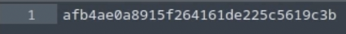
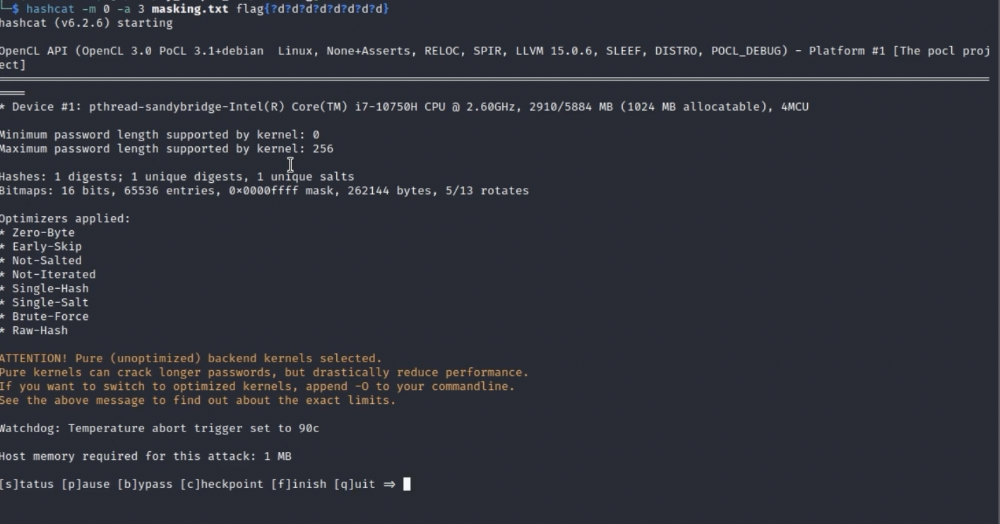
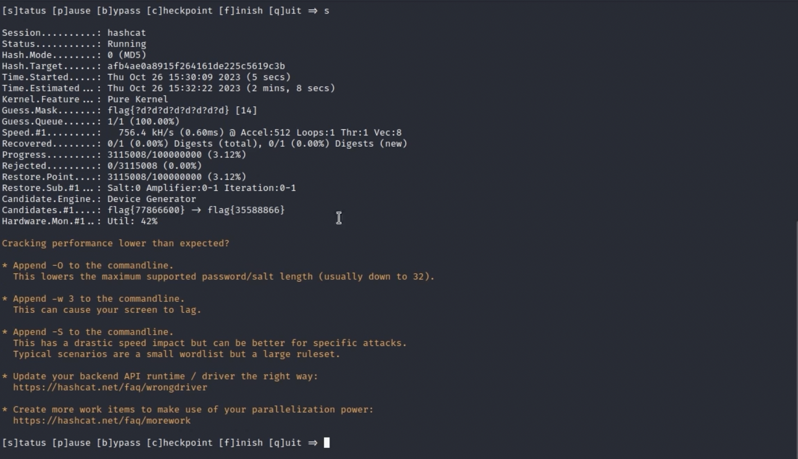
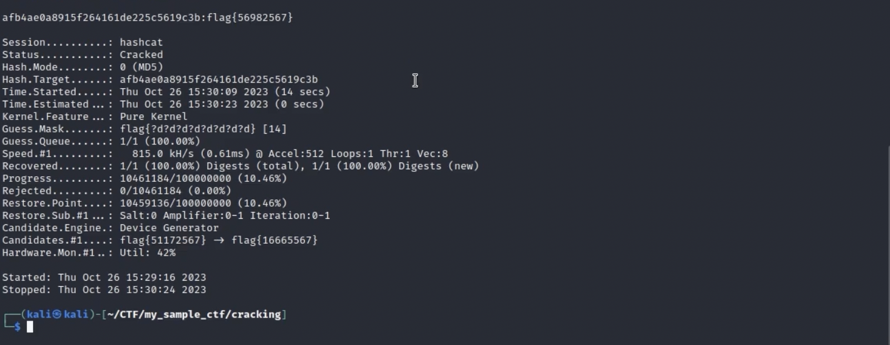

Mask Attacks
One of the other interesting things that Hashcat can do, other than the dictionary attack I did in previous blogs where I compare common passwords to a hash, is that it can do whats called a Mask Attack. A mask attack is a targeted brute force where you tell Hashcat the password pattern you expect. For example “Capital letter + 5 lowercase + 2 digits” and only tries candidates that match that pattern. This makes cracking way faster than blind brute force because you're only searching realistic passwords instead of every possible string. However the caveat to this is that you have to KNOW first what pattern the password might be. Maybe you found the /etc/login.defs file or the /etc/security/pwquality.conf.
Given this password flag, I see that its 32 hex characters long which probably means that its md5 so i'm going to do the same thing as last time and do hashcat -m 0. However this time im going to put -a 3 to signal that its going to be a mask attack. After the -a 3, i'm going to put the file that contains the actual flag, then I am going to specify the format that the password is going to be. Now the challenge says that the format of the flag is going to be flag{} and then 8 digits inside the curly braces. Now to actually put this into the hashcat, im going to do hashcat -m 0 -a 3 masking.txt flag{?d?d?d?d?d?d?d?d}. This basically tells hashcat that the password format is going to be the world flag with 8 digits inside so it doesnt have to go through any sort of dictionary. It just needs to generate passwords that meet that criteria.
So now the cracking process has actually started and I am going to press "s" to signal that I want to know the status
From the status, I can see that hashcat is generating all the different hashes that match the format that I gave it
I gave it like a few seconds and it showed the flag as flag{56982567}. You can see that the flag matches the format that I gave it and this is much easier than the blind brute force than I did in the previous blogs because I cut down a lot of possibilites it could be by giving the format it should be